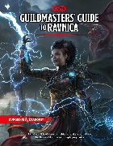

Livres D&D 5
Liste des livres officiels (règles et settings) parus et à paraître pour D&D 5. Notez que les prix indiqués sont ceux qui apparaissent sur le site de Wizards of the Coast, mais il est possible de trouver ces ouvrages bien moins chers, sur Amazon par exemple.
Basic Rules

Sortie VO : 3 juillet 2014 (gratuit)
Nbre de pages : PDF
Lien de téléchargement VF : Basic Rules en français
Lien de téléchargement VO : D&D Basic Rules v1.0 (2018)
Tout le nécessaire pour créer et jouer 4 classes (clerc, guerrier, magicien et roublard) et 4 races (humain, elfe, halfelin et nain) du niveau 1 au niveau 20. Lorsque le Player's Handbook est sorti, ces règles ont été complétées avec de nombreux monstres et objets magiques. Les Basic Rules ne présentent par contre pas de dons.
Starter Set [ Kit d'initiation ]
Sortie VO : 15 juillet 2014 (19.99 $US)
Sortie VF : 23 mars 2018 (32.90 €)
Nbre de pages : 32+64 [boite]
Complément : aperçu par Rôliste TV
Tout le nécessaire pour commencer à jouer à D&D. La boite comprend un livret de règles de 32 pages pour jouer des personnages de niveaux 1 à 5, cinq fiches de PJ pré-tirés, six dés et un scénario de 64 pages, « Lost Mine of Phandelver [ La mine oubliée de Phancreux ] ». Située dans l'univers des Royaumes Oubliés et mettant en scène des gobelins, cette aventure conçue pour des PJ de niveau 1 le mènera au niveau 5.
Player's Handbook [ Manuel des Joueurs ]
 Sortie VO : 19 août 2014 (49.95 $US)
Sortie VO : 19 août 2014 (49.95 $US)
Sortie VF : 21 avril 2017 (50.00 €) par BBE, 08 octobre 2021 (39.99 €) par WotC FR
Nbre de pages : 320
Complément : aperçu par Rôliste TV
Tout ce dont un joueur a besoin pour créer des personnages héroïques pour D&D. Le Manuel des Joueurs est l’ouvrage de référence pour tous les joueurs de Dungeons & Dragons. Il contient les règles de création et de progression des personnages, les historiques, les compétences et l'équipement, les règles d'exploration, de combat et de magie, pour toutes les races et les classes iconiques de D&D.
Monster Manual [ Manuel des Monstres ]
Sortie VO : 30 septembre 2014 (49.95 $US)
Sortie VF : 21 juillet 2017 (50.00 €) par BBE, 08 octobre 2021 (39.99 €) par WotC FR
Nbre de pages : 352
Complément : Monsters by Challenge Rating , aperçu par Rôliste TV
Le Manuel des Monstres présente une horde de créatures pour D&D, comme les dragons, les géants, des flagelleurs mentaux ou bien encore les tyrannœils. L'ouvrage comprend les statistiques de plus de 400 monstres (435 pour être précis), de très nombreuses illustrations ainsi que des histoires pour renforcer l'imagination. Un véritable festin monstrueux pour les MD prêts à défier leurs joueurs et à peupler leurs aventures.
Dungeon Master's Guide [ Guide du Maître ]
 Sortie VO : 9 décembre 2014 (49.95 $US)
Sortie VO : 9 décembre 2014 (49.95 $US)
Sortie VF : 10 novembre 2017 (50.00 €) par BBE, 08 octobre 2021 (39.99 €) par WotC FR
Nbre de pages : 320
Complément : Magic Items by Rarity , aperçu par Rôliste TV
Tout ce dont un maître de jeu a besoin pour faire vivre des histoires légendaires pour D&D. Le Guide du Maître fournit l'inspiration et les conseils dont vous avez besoin pour attiser votre imagination et créer des mondes d’aventure que vos joueurs pourront explorer et apprécier. Vous trouverez dans ce livre des outils pour créer un monde, des conseils pour réaliser des aventures mémorables, des règles de jeu optionnelles, des centaines d'objets magiques classiques, et bien plus.
Sword Coast Adventurer's Guide [ Guide des aventuriers de la côte des Épées ]
Sortie VO : 3 novembre 2015 (39.95 $US)
Sortie VF : 20 septembre 2019 (40 €)
Nbre de pages : 160
Complément : aperçu par Rôliste TV
Le Guide de la côte des Épées présente cette région du nord-ouest de Faerûn. Ressource précieuse pour les MD, il a avant tout été conçu en pensant aux joueurs et à leurs personnages. Il présente 12 nouveaux historiques, 11 nouvelles sous-classes, 8 nouvelles sous-races et une nouvelle race pour les joueurs (le feral tiefling), 4 sorts et de nombreuses informations sur la région, les villes, les dieux et l'histoire de cette partie des Royaumes Oubliés.
Volo's Guide to Monsters
Sortie VO : 15 novembre 2016 (49.95 $US)
Nbre de pages : 224
Ce Volo's Guide to Monsters présente en détail certains des plus populaires et des plus emblématiques monstres de D&D, comme le beholder, le flagelleur mental et le yuan-ti, ou les plus classiques orcs, gnolls et kobolds. Il propose aussi les statistiques de 139 nouveaux monstres et PNJ, ainsi que 12 nouvelles options de race pour les joueurs, de l'aasimar au yuan-ti sang-pur en passant par le kenku et le tabaxi. On n'est donc pas très loin d'avoir un Monster Manuel II avec ça.
Xanathar's Guide to Everything [ Le guide complet de Xanathar ]
Sortie VO : 21 novembre 2017 (49.95 $US)
Sortie VF : 14 septembre 2018 (50.00 €) par BBE, 22 février 2022 par WotC FR
Nbre de pages : 192 (codename Midway)
Complément : aperçu par Rôliste TV
Ce guide propose 27 nouvelles sous-classes, 52 nouveaux sorts, 15 nouveaux dons raciaux et 50 nouveaux objets magiques, ainsi que de nouvelles règles pour les temps morts et les pièges. Plus la reprise de 4 sous-classes du Sword Coast Adventurer's Guide. Cet ouvrage présente en fait la version finale et officielle de nombreux articles parus dans la colonne Unearthed Arcana de WotC, que vous pouvez trouver traduits en français sur Tapouweb.
Mordenkainen's Tome of Foes
Sortie VO : 29 mai 2018 (49.95 $US)
Nbre de pages : 256 (codename Marathon)
Complément : aperçu par Rôliste TV
Ce livre décrit les différentes guerres qui ont rempli l'histoire du multivers comme les schismes entre les elfes et les drows, entre les githyanki et les githzerai, ou bien encore entre les nains et les duergars et la Guerre de sang entre les diables et les démons. Il propose également 13 nouvelles sous-races d'elfes, de duergars et de tieffelins, une nouvelle race pour les joueurs (le gith) ainsi que 120 nouvelles créatures issues de divers plans d'existence, la moitié étant de FP 10 ou plus (mais pas de dieux).
Guildmasters' Guide to Ravnica
Sortie VO : 20 novembre 2018 (49.95 $US)
Nbre de pages : 256
Ravnica est une immense cité, issue d'un univers du jeu de cartes Magic: The Gathering, où dix guildes (syndicats du crime, institutions scientifiques, Églises, forces militaires, cours de justice et gangs déchaînés) luttent depuis des millénaires pour le pouvoir et la richesse dans une ambiance décrite comme très « Europe de l’est » et en partie Steampunk si l'on se fie à la couverture. L'ouvrage propose 10 historiques, 2 nouvelles sous-classes, 45 objets magiques, 78 monstres, 5 nouvelles races pour les joueurs (centaur, loxodon, minotaur, simic hybrid et vedalken) ainsi que des informations sur ces dix guildes.
Acquisitions Incorporated
Sortie VO : 18 juin 2019 (49.95 $US)
Nbre de pages : 224
Ce livre un peu spécial permet d'utiliser des ingrédients de l'actual play décalé Acquisitions Incorporated (commencé en 2008 avec D&D 4 sous forme de podcast et qui se joue dans les Royaumes Oubliés) dans ses campagnes. Il propose notamment 5 nouveaux historiques, 24 objets magiques, 40 monstres, 7 sorts, une nouvelle race pour les joueurs (le verdan) et une aventure qui mènera les personnages du niveau 1 au niveau 6.
Essentials Kit [ L'Essentiel ]
Sortie VO : 24 juin 2019 (24.99 $US)
Sortie VF : 08 octobre 2021 (19.99 €) par WotC FR
Nbre de pages : 64+64 [boite]
Complément : aperçu par Rôliste TV
Nouvelle boite dans le style du Starter Set qui inclut tout le nécessaire pour jouer avec un MD et de 1 à 5 joueurs, créer des personnages et d'autres améliorations, fruit de 5 ans d'expérience depuis la sortie du premier kit. La boite comprend les règles (clerc, guerrier, magicien, roublard et barde jusqu'au niveau 6) et un scénario de 64 pages, « Dragon of Icespire Peak [ Le dragon de la Flèche de givre ] », conçu pour 4 PJ de niveau 1 et qui les mènera au niveau 6, une carte de Phandalin, un écran pour le MD, 11 dés et 81 cartes (objets magiques, conditions, créatures).
Eberron: Rising from the Last War
Sortie VO : 19 novembre 2019 (49.95 $US)
Nbre de pages : 320
Complément : aperçu par Rôliste TV
Ce livre présente l'univers d'Eberron et la cité de Sharn après la Dernière Guerre. Il reprend le PDF Wayfinder's Guide to Eberron et ajoute du contenu inédit. Au final on y trouve 5 nouvelles races pour les joueurs (changeling, kalashtar, orc of Eberron, shifter, warforged), 17 sous-races, 12 objets magiques, 43 nouveaux monstres, les dracogrammes, la classe d'artificier en version définitive avec ses 3 sous-classes, un nouveau concept d'historique pour tout un groupe de personnages [group patron], des cartes et un scénario.
Explorer's Guide to Wildemount
Sortie VO : 17 mars 2020 (49.95 $US)
Nbre de pages : 304
Complément : aperçu par Rôliste TV
Wildemount est un continent du monde d'Exandria de Matthew Mercer sur lequel ont lieu les aventures de la deuxième saison de la série d'actual play Critical Role (la première saison se déroule sur le continent de Tal'Dorei). Le livre présente le setting (ambiance Europe de l'est entre le 13ème et le 15ème siècle), propose de nouvelles options de personnages liées à cet univers (7 historiques, 4 sous-races, 3 sous-classes, 15 sorts, 46 objets magiques, 48 créatures) et 4 aventures de niveau 1 à 3, soit tout ce dont un MD pourrait avoir besoin pour faire jouer une campagne en Wildemount.
Mythic Odysseys of Theros
Sortie VO : 21 juillet 2020 (49.95 $US)
Nbre de pages : 256
Complément : aperçu par Rôliste TV
Après Ravnica en 2018, voici un nouveau crossover avec le jeu de cartes Magic: The Gathering. Ce livre de setting présente Théros, un royaume inspiré par la mythologie grecque et les titans où les (15) dieux côtoient les héros. On pourra y jouer entre autres un satyre, un léonin ou un minotaure, un barde du collège de l'éloquence ou un paladin du serment d’héroïsme. L'ouvrage présentera également de nouvelles créatures mythiques, 5 nouveaux artefacts et un nouveau concept de don surnaturel.
Tasha's Cauldron of Everything
Sortie VO : 17 novembre 2020 (49.95 $US)
Nbre de pages : 192
Complément : aperçu par Rôliste TV
Dans la même veine que le Xanathar's Guide to Everything, ce livre propose de nouvelles options pour jouer. Une révision de la classe d'artificier (déliée d'Eberron), 22 nouvelles sous-classes et 5 reprises (Order Domain, Circle of Spores, College of Eloquence, Oath of Glory and Bladesinging), de nouveaux dons, sorts et objets magiques, 3 nouveaux compagnons pour le rôdeur maître des bêtes, la magie des tatouages, les historiques de groupe (repris d'Eberron), les comparses (repris de l'Essentials Kit) sur 20 niveaux, des énigmes et un système de lignée pour les races.
Van Richten's Guide to Ravenloft [ Le guide de Van Richten sur Ravenloft ]
Sortie VO : 18 mai 2021 (49.95 $US)
Sortie VF : 17 mai 2022 par WotC FR
Nbre de pages : 256
Complément : aperçu par Rôliste TV
Ce livre donne les outils pour faire jouer dans l'univers d'horreur gothique de Ravenloft. Vous y trouverez une description des 30 différents domaines de cet univers (Lamordia, Dementlieu, Kalakeri, Falkovnia, etc), de nouveaux historiques, des lignées gothiques (dhampir, sang maudit, réincarné) et 2 nouvelles sous-classes (le collège des esprits pour barde et le patron mort-vivant pour occultiste). Plus 40 pages de nouvelles créatures horrifiques. Enfin, l'ouvrage propose une nouvelle aventure complètement inédite, The House of Lament, sur 20 pages.
Fizban's Treasury of Dragons
Sortie VO : 26 octobre 2021 (49.95 $US)
Nbre de pages : 224
Introduction des dragons gemmes. Révélation sur l'histoire du Premier Monde et le rôle joué par Bahamut et Tiamat dans sa création et sa destruction. Nouvelles options de personnage, les sous-classes de la voie du dragon ascendant (moine) et du gardien de drake (rôdeur), des dons et des sorts. Des outils et des informations pour les MD pour concevoir des rencontres, des aventures et des campagnes sur le thème des dragons à travers les différents mondes de D&D, avec des cartes de repaires de dragons et des détails sur 20 types de dragons différents. Un bestiaire de dragons complet qui introduit une variété de nouveaux dragons et de créatures liées aux dragons, y compris des aspects des dieux dragons, des serviteurs dragons et plus encore.
Strixhaven: A Curriculum of Chaos
 Sortie VO : 07 décembre 2021 (49.95 $US)
Sortie VO : 07 décembre 2021 (49.95 $US)
Nbre de pages : 224
Nouveau setting issu de nouveau d'un crossover avec le jeu de cartes Magic: The Gathering. L'ouvrage présente Strixhaven, la plus prestigieuse université pour mages de D&D. De nouvelles options de personnage, des dons, des historiques, des sorts et des objets magiques. Une campagne pluriannuelle sur 4 ans en 4 aventures où les étudiants commencent en première année, socialisent et s'aventurent sur le chemin de l'obtention du diplôme, faisant passer les joueurs du niveau 1 au niveau 10. Ces aventures peuvent également être jouées de manière indépendante. Plus de 40 créatures et PNJ magiques et mystérieux. Une nouvelle race pour PJ : le hibou. Et pour terminer une carte recto-verso avec d'un côté le campus de Strixhaven et de l'autre des lieux importants.
Monsters of the Multiverse
Sortie VO : coffret Rules Expansion Gift Set - 25 janvier 2022 (169.95 $US) / livre indépendant - 17 mai 2022.
Nbre de pages : ...
Un livre pour joueurs et MD, contenant plus de 30 races de personnages pour les joueurs mises à jour et un énorme bestiaire avec plus de 250 monstres et blocs de statistiques repensés, le tout pouvant être utilisé dans n'importe quel monde de D&D.